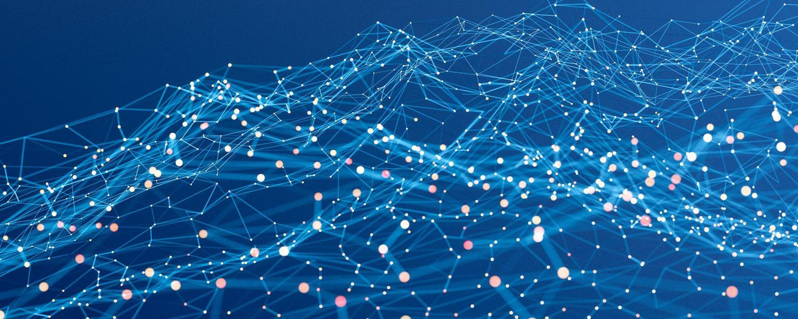

Основным недостатком оптических волокон являются повышенные требования к обслуживающему персоналу как на этапе монтажа оптического кабеля, так и в ходе обслуживания. Львиная доля повреждений в ВОЛС как раз и связана с недостатком знаний и навыков по работе с активными и пассивными компонентами ВОЛС. Среди основных проблем, которые допускаются по незнанию или халатности можно выделить грязные коннекторы и макро изгибы.

Еще одним недостатком является появление микротрещин и повышение затухания оптического волокна за счет водородной коррозии. Распространенным заблуждением является утверждение, что оптическое волокно не боится попадания воды в оптическую муфту.